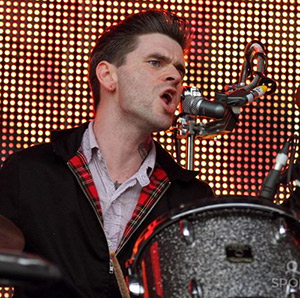
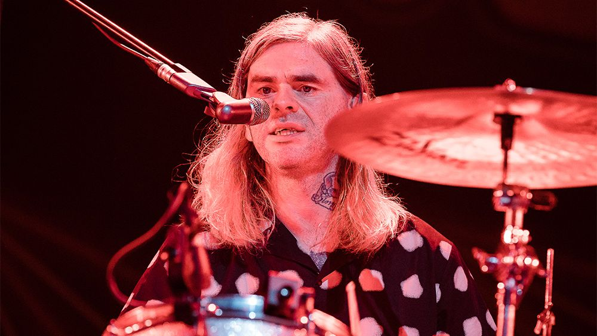
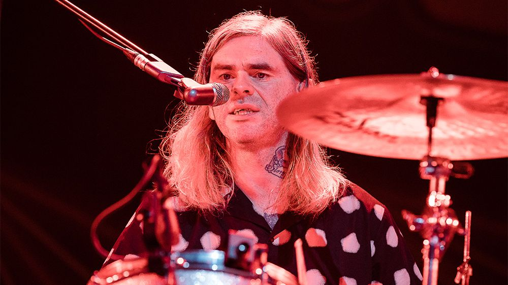
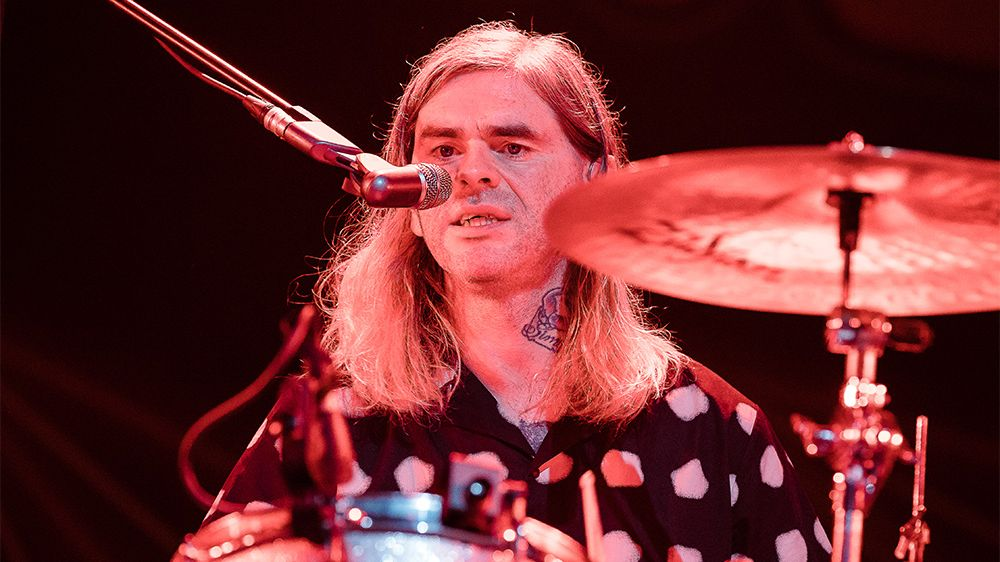
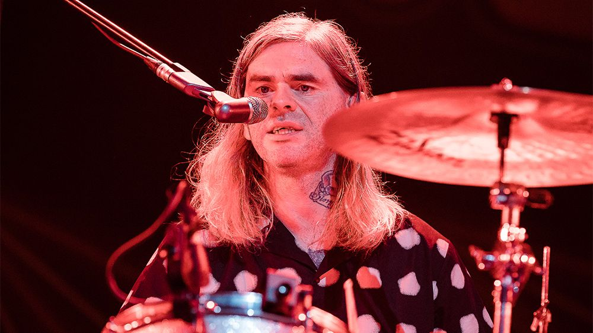

Photo Gallery

 


Paul Thomson, the incredible drummer of Franz Ferdinand, talks about his musical career, his influences, and life on tour.
Role: Drums
I've always been drawn to rhythm. As a kid, I was banging on anything I could find—tables, boxes, you name it. Eventually, I got my first drum kit, and from there, it just clicked.
Drumming is physically demanding. You have to stay in great shape to keep up the energy, especially during long tours. But it's also about keeping things dynamic—making sure every beat serves the song.
There’s no feeling like it. The energy from the crowd fuels us. Every night is different, and the adrenaline rush never gets old.
I’ve always been inspired by drummers like John Bonham, Stewart Copeland, and Mitch Mitchell. Their styles are unique, and they taught me a lot about groove and power.
We’re always working on new material, and of course, touring is a big part of what we do. There’s more music and exciting projects on the horizon.
